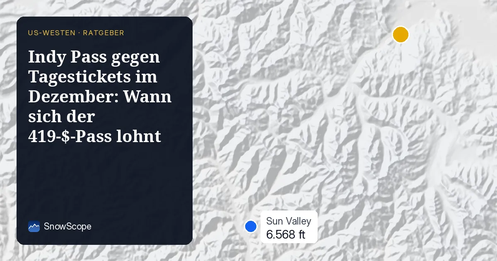

Indy Pass gegen Tagestickets im Dezember: Wann sich der 419-$-Pass lohnt
Der Indy Pass verkauft eine einfache Idee: zwei Tage in jedem von mehr als 300 unabhängigen Skigebieten. Für eine Dezemberreise stellt sich die Frage, ob zwei oder drei kleine Berge mit echten Schneechancen Tagestickets schlagen. Wir haben für sieben Indy-Gebiete auf unserer Dezemberliste nachgerechnet.
Die Live-Schneeprognose für US West in der SnowScope-AppSchneehöhen, Pulverschnee-Alarme und 3D-Karte, gratis.
Was der Pass kostet
Für 2026-27 kostet der Indy Base Pass 419 $ für Erwachsene und gibt zwei Ganztagestickets (oder Abendtickets) in jedem Partnergebiet, mit Sperrterminen. Der Indy+ Pass kostet 469 $, mit denselben zwei Tagen pro Gebiet, aber ohne Sperrtermine. Fällt die Dezemberreise in die Feiertage, zählt die Sperrterminfrage mehr als die Preisdifferenz zwischen beiden Varianten.

Zwei Tage, stattdessen am Schalter bezahlt
So viel kosten zwei Tage zu den geprüften Tagespreisen, unsere eigene Rechnung. Loveland: 120 $ mit den Online-Tickets zur Saisoneröffnung, aber 318 $ am Schalter ab dem 14. Dezember. Brundage: 130 $ zum Startpreis. White Pass: 138 $ zum günstigsten Online-Preis außerhalb der Spitzenzeiten. Sunlight: 148 $ zum Startpreis. Beaver Mountain: 150 $. Montana Snowbowl: 156 $ unter der Woche, 170 $ am Wochenende. Snow King: 200 $ zum Startpreis.
Der Pass rechnet sich also nicht bei einem Gebiet. Bei den günstigsten Preisen lohnt er sich ab dem dritten besuchten Gebiet für zwei Tage; bei Wochenend-, Spitzen- oder Schalterpreisen können zwei Gebiete reichen.
Welche Indy-Gebiete im Dezember lohnen
Schnee zählt genauso viel wie der Preis. Nach unserer Historie liegt der Anteil der Winter mit mindestens 20 in (50 cm) auf Mittelstationshöhe am 15. Dezember bei 87 % für White Pass, Snow King und Brundage, 83 % für Montana Snowbowl, 72 % für Sunlight, 67 % für Loveland und 57 % für Beaver Mountain.
Ein Indy-Dezember-Roadtrip im Nordwesten und den nördlichen Rockies, White Pass, Brundage, Snowbowl und Snow King, liegt auf der sichereren Seite. Beaver Mountain und Loveland hebt man sich besser für Ende Dezember auf, wenn ihre Chancen steigen.
Wann Tagestickets gewinnen
Wer nur ein oder zwei Tage in einem Gebiet fährt, fährt mit Tagestickets klar besser: ein Montag bei Montana Snowbowl kostet 78 $, ein Wochentag bei Beaver Mountain 75 $. Und bei Loveland ist das Online-Ticket zur Saisoneröffnung für 60 $ bis zum 13. Dezember besser als jeder Pass-Tag, den man dort einlösen könnte.
Der Indy Pass gewinnt für den Skifahrer, der unterwegs ist: mehrere Gebiete, je zwei Tage, über den ganzen Winter. Dezember ist ein guter Monat, um ihn zu nutzen, nicht der alleinige Grund, ihn zu kaufen.
Tipps für Skifahrer
- Zählen Sie erst Ihre Ausflüge: ein Gebiet, Tagestickets kaufen; drei Gebiete oder mehr, den Pass prüfen.
- Feiertagstermine? Die Indy-Sperrliste prüfen oder den Aufpreis für Indy+ zahlen.
- Kombinieren Sie die sichersten Dezember-Indy-Gebiete (White Pass, Brundage, Snowbowl, Snow King) in einer Reise.
- Lovelands 60-$-Online-Tage für Anfang Dezember aufheben und den Pass anderswo nutzen.
Quellen und Nachweise
- White Pass, online day tickets 2026/27 (official) skiwhitepass.com/online-day-ticket-sales
- Beaver Mountain, tickets and passes 2026-2027 (official) www.skithebeav.com/tickets-and-passes/
- Snow King Mountain, winter day tickets (official store) store.snowkingmountain.com/en/catalogue/category/500-winter-lift-tickets/510-day-ticket_447/
- Loveland Ski Area, lift tickets 2026-27 (official) skiloveland.com/lift-tickets/
- Brundage Mountain, daily lift tickets (official) brundage.com/daily-lift-tickets/
- Montana Snowbowl, lift tickets 2026/27 (official) montanasnowbowl.com/sbblog/lift-tickets/
- Sunlight Mountain Resort, lift tickets (official) sunlightmtn.com/lift-tickets/
- Indy Pass, shop 2026-27 (official) www.indyskipass.com/shop
Zu diesen Zahlen
Schneewerte: SnowScope-Schneehistorie, 46 vergangene Winter (1980-81 bis 2025-26) auf den angegebenen Höhen (Tal, Mitte, Gipfel), eine höhenkorrigierte Rekonstruktion des früheren Schnees für eine Fläche (auf Basis von ERA5-Land; Snow_Hydro 1 km für Marokko), keine Meldungen des Skigebiets. Aktueller Schnee: die SnowScope-Schneekarte. Lifte, Pisten und Höhen: OpenSkiMap-Kartierung. Preise: die unten genannten offiziellen Seiten, gelesen am 13. November 2026; dynamische Preise ändern sich mit Datum und Nachfrage.
Diesen Bericht zitieren
Für Forschung, Lehre oder Presse: Zahlen und Grafiken sind unter CC BY 4.0 mit dieser Quellenangabe frei nutzbar.
SnowScope (2026), Indy Pass gegen Tagestickets im Dezember: Wann sich der 419-$-Pass lohnt, https://snowscope.app/blog/de/2026/11/indy-pass-vs-day-tickets-december-2026.html, abgerufen am 2026-11-14
SnowScope (Atlas Labs). (2026, November 14). Indy Pass gegen Tagestickets im Dezember: Wann sich der 419-$-Pass lohnt. SnowScope snow reports. https://snowscope.app/blog/de/2026/11/indy-pass-vs-day-tickets-december-2026.html
BibTeX
@misc{snowscope2026indypassvsdayticketsdece,
author = {{SnowScope (Atlas Labs)}},
title = {Indy Pass gegen Tagestickets im Dezember: Wann sich der 419-$-Pass lohnt},
year = {2026},
month = nov,
howpublished = {\url{https://snowscope.app/blog/de/2026/11/indy-pass-vs-day-tickets-december-2026.html}},
note = {Published 2026-11-15 09:34 UTC; accessed 2026-11-14}
}· CC BY 4.0 · Methoden, Daten und Werkzeuge →
US West folgen
Gratis: eine Nachricht, wenn Neuschnee kommt, und jeden Morgen die Vorhersage.